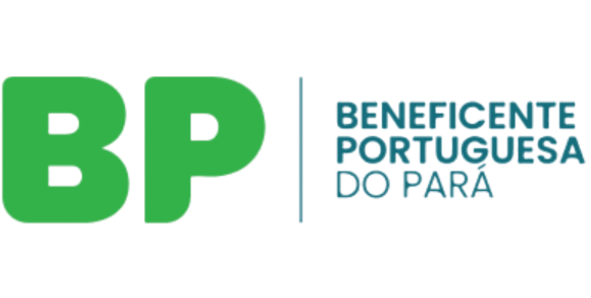

Nexo Glosas · Teste operacional
Tutorial de teste do recurso de glosa
Roteiro prático para a equipe importar o demonstrativo, revisar a conciliação e gerar um XML local de recurso para a CAPESESP.
AmbienteDocker local
OperadoraCAPESESP
Data09/10/2026
Entre no painel local (endereço interno fornecido pela equipe de TI). Cada participante deve usar sua conta individual. O botão fica na tela Visão geral, no canto superior direito.
1
Clique em “Importar XML”
Selecione um arquivo TISS do tipo DEMONSTRATIVO_ANALISE_CONTA. Para o piloto, use o XML de teste combinado com a equipe.
2
Confirme a substituição
O sistema arquiva o contrato e as decisões anteriores antes de iniciar a nova análise. O XML original não é armazenado.
3
Aguarde a conciliação
O demonstrativo é comparado com o snapshot local da guia no MV. Nenhum INSERT ou UPDATE é executado no Oracle.
4
Confira o resumo
O painel recarrega automaticamente e apresenta as quantidades confirmadas, prováveis e não localizadas.
Itens123
Confirmados92
Prováveis31
Não localizados0
Resultado esperado do piloto: protocolo 00000001, guia 100000 e R$ 11.394,96 de valor glosado. Se o resultado for diferente, interrompa o teste e não gere o recurso.
Snapshot obrigatório: se não houver snapshot MV da guia, a importação será recusada e a análise atual permanecerá intacta.
Com a equipeAnálise item a item
- Abra Análise de glosas.
- Comece pelos itens confirmados.
- Escolha Recorrer, Aceitar glosa ou Aguardando.
- Informe o valor e uma justificativa objetiva.
- Salve o rascunho durante a revisão.
AtençãoItens prováveis
- Compare descrição, código, data e valor com o MV.
- Não considere igualdade de valor como prova suficiente.
- Marque “Correspondência confirmada” somente após a conferência humana.
- Itens não localizados não podem ser recorridos.
Regra CAPESESP: o código do evento deve ser exatamente o mesmo da cobrança original. Não tente solicitar mudança de código na justificativa.
Montar o XML de recurso
1
Abra “Montar recurso”
Confira sequencial da transação, novo lote, protocolo e data do recurso.
2
Confira as guias J/K
Valide manualmente os números com o Demonstrativo de Análise de Conta e marque a confirmação.
3
Valide a checklist
Todos os itens selecionados precisam ter valor, justificativa e confirmação quando a conciliação for provável.
4
Gere e baixe
Clique em Validar e gerar XML e, após o sucesso, em Baixar último XML.
A justificativa aceita no máximo 150 caracteres ponderados. Caracteres especiais contam como dois. Valores usam ponto como separador decimal e não usam separador de milhar.
Antes de considerar o arquivo apto, a equipe deve revisar junta os pontos abaixo.
Protocolo, lote, guia do prestador e guia da operadora conferidos.
Somente itens aprovados estão marcados como RECORRER.
Valores recursados não excedem os valores glosados.
Itens prováveis possuem confirmação manual documentada.
Justificativas e documentos comprobatórios estão completos.
XML gerado em ISO-8859-1, TISS 4.01.00, com ANS 324477 e hash.
Validação XSD concluída sem erro.
1 · PortalUpload manual do XML no Portal Protheus
→
2 · ProtocoloAnotar o número devolvido pelo portal
→
3 · DocumentosEnviar comprovação no Atendimento Virtual
Durante o MVP: não enviar ao Portal ProtheusO manual CAPESESP informa que é permitido apenas um recurso por protocolo/PEG. O teste deve terminar no download e na validação local. O encaminhamento real só ocorre após aprovação final e dentro do prazo contratual.
Referência: Manual do Recurso de Glosa Eletrônico — CAPESESP, edição 06/2023. Após o envio real, a documentação ou carta justificativa é obrigatória.
Fluxo seguro: o Nexo Glosas não transmite arquivos e não escreve no banco MV. O registro de envio deve ser feito somente após confirmação humana no portal.